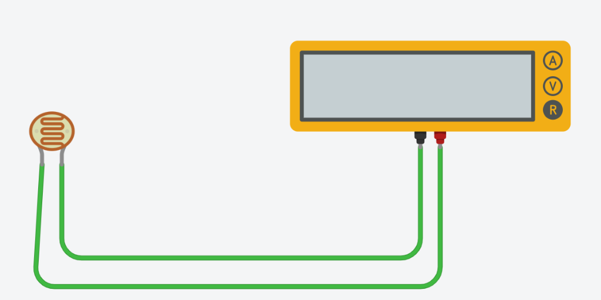

Niveau : Terminale SI / Spécialité SI
Durée conseillée : 4h00
Poste / Binôme : ..................
Évaluation : ..... / 20
Représentation & Modélisation des Mesures Physiques
Google Sheets et Python Matplotlib — Capteurs passifs, Pont diviseur et Conditionnement CTN 10 kΩ
📌 Objectifs & Compétences du Programme de Terminale SI
- Compétence B2 / CO2.1 : Caractériser les grandeurs physiques de la chaîne d'information (tension, courant, résistance, éclairement, température).
- Compétence B3 / CO2.4 : Mesurer et acquérir des grandeurs électriques par simulation (Tinkercad Circuits).
- Compétence C1 / CO3.1 : Traiter et organiser méthodiquement des données de mesure sous tableur (Google Sheets) et en langage Python.
- Compétence C2 / CO3.2 : Choisir et construire la représentation graphique adaptée (Nuage de points XY, Diagramme en colonnes/barres, Graphique en secteurs).
- Compétence C3 / CO3.3 : Modéliser mathématiquement un comportement physique (courbe de tendance, calcul de R²) sous tableur et avec
numpy/matplotlib. - Compétence D1 / CO4.1 : Implanter une loi d'étalonnage mathématique dans l'algorithme d'un microcontrôleur pour restituer la température en °C.
Vous utiliserez l'environnement Thonny en sélectionnant
Exécuter > Configurer l'interpréteur... > Python 3 local.
Partie 1 : Caractérisation d'un Capteur Résistif (LDR) — Nuage de Points XY Durée : 1h15
Une photorésistance (LDR pour Light Dependent Resistor) est un capteur passif dont la résistance interne diminue lorsque le flux lumineux incident augmente.
1.1. Mesure directe R = f(Luminosité)
1. Sous Tinkercad Circuits, reliez une LDR directement aux bornes d'un multimètre configuré en mode Ohmmètre (symbole R).
2. Lancez la simulation, cliquez sur la LDR et faites varier le curseur de 0 % (obscurité) à 100 % (plein soleil).
3. Complétez le tableau de mesures suivant :

| Luminosité (%) | 0 % | 10 % | 20 % | 30 % | 40 % | 50 % | 60 % | 70 % | 80 % | 90 % | 100 % |
|---|---|---|---|---|---|---|---|---|---|---|---|
| Résistance mesurée R (kΩ ou Ω) | ... | ... | ... | ... | ... | ... | ... | ... | ... | ... | ... |
🟢 Aide Google Sheets N°1 : Nuage de Points (Scatter Plot)
- 1 Sélection : Sélectionnez les colonnes Luminosité et Résistance (avec les en-têtes).
- 2 Insertion : Menu
Insertion>Graphique. - 3 Type de graphique : Dans l'onglet
Configurer> Type de graphique, choisissez Nuage de points (Scatter).
⚠️ INTERDIT : Ne choisissez jamais "Graphique en courbes" (ligne brisée) pour des données physiques ! - 4 Axes : Vérifiez Axe X = Luminosité (%) (commande) et Série = Résistance (réponse).
- 5 Personnalisation : Onglet
Personnaliser> Titres : nommez le graphique et les axes avec unités (kΩ). Cochez le Quadrillage principal.
🐍 Méthode Python (Matplotlib)
- Consultez l'exemple officiel : Scatter plot demo.
- Utilisez
plt.scatter()pour tracer les points de mesure expérimentaux discrets. - Superposez
plt.plot(..., linestyle='--')pour esquisser l'allure du profil. - Paramétrez les libellés avec
plt.xlabel(),plt.ylabel(),plt.title()et activezplt.grid(True).
# Squelette à compléter d'après la galerie : https://matplotlib.org/stable/gallery/index.html
import matplotlib.pyplot as plt
# 1. TODO: Remplir les listes avec vos mesures réelles
luminosite = [0, 10, 20, 30, 40, 50, 60, 70, 80, 90, 100]
resistance_kohm = [ ... ] # <-- À COMPLÉTER avec vos valeurs mesurées
plt.figure(figsize=(8, 5))
# 2. TODO: Tracer le nuage de points (scatter) et la courbe d'allure
# plt.scatter(luminosite, resistance_kohm, color='red', marker='o', s=50, label='Mesures LDR')
# plt.plot(luminosite, resistance_kohm, color='darkred', linestyle='--', alpha=0.7)
# 3. TODO: Configurer les axes, la grille et le titre
plt.title("Caractéristique de la LDR : R = f(Luminosité)")
plt.xlabel("Luminosité (%)")
plt.ylabel("Résistance (kΩ)")
plt.grid(True, linestyle=':', alpha=0.6)
plt.legend()
plt.show()Questions d'analyse :
Q1. Pourquoi la grandeur de commande (Luminosité) doit-elle impérativement figurer sur l'axe des abscisses (X) et la grandeur mesurée (Résistance) sur l'axe des ordonnées (Y) ?
Q2. La relation observée est-elle linéaire ou non linéaire ? Décrivez l'évolution de la résistance lorsque l'éclairement augmente.
1.2. Comparaison multi-séries & Gestion de la dynamique de mesure
On dispose d'un second modèle de LDR dont les caractéristiques de fabrication sont différentes :
| Luminosité (%) | 0 | 10 | 20 | 30 | 40 | 50 | 60 | 70 | 80 | 90 | 100 |
|---|---|---|---|---|---|---|---|---|---|---|---|
| Résistance LDR 2 (Ω) | 9 | 12 | 20 | 50 | 110 | 200 | 400 | 1000 | 2200 | 5000 | 12000 |
🟢 Aide Google Sheets N°2 : Gestion Multi-séries & Dynamique
- Option A (Axe secondaire) : Dans
Configurer> Série > Ajouter une série (LDR 2). Puis dansPersonnaliser> Série > LDR 2 > Axe : Axe de droite. - Option B (2 graphiques séparés — Recommandé) : Créez deux nuages de points distincts côte à côte. Chaque capteur dispose ainsi de sa propre échelle optimisée sans écrasement visuel.
🐍 Méthode Python : Deux Sous-graphiques (`plt.subplots`)
- Consultez la galerie : Subplots Demo.
- Créez 2 axes avec
fig, (ax1, ax2) = plt.subplots(1, 2, figsize=(12, 5)). - Tracez la LDR 1 sur
ax1(échelle kΩ) et la LDR 2 surax2(échelle Ω). - Utilisez
plt.tight_layout()pour éviter le chevauchement des titres.
# Squelette à compléter : afficher 2 graphiques séparés (1 ligne, 2 colonnes)
import matplotlib.pyplot as plt
lum = [0, 10, 20, 30, 40, 50, 60, 70, 80, 90, 100]
r_ldr1 = [ ... ] # Vos mesures de la LDR 1 (en kΩ)
r_ldr2 = [9, 12, 20, 50, 110, 200, 400, 1000, 2200, 5000, 12000]
fig, (ax1, ax2) = plt.subplots(1, 2, figsize=(12, 5))
# 1. TODO: Tracer sur ax1 la courbe de la LDR 1
# ax1.scatter(lum, r_ldr1, color='blue', label='LDR 1')
# ax1.plot(lum, r_ldr1, color='darkblue', linestyle='--')
# ax1.set_title("Capteur 1 : LDR classique")
# ax1.set_xlabel("Luminosité (%)"); ax1.set_ylabel("Résistance (kΩ)"); ax1.grid(True)
# 2. TODO: Tracer sur ax2 la courbe de la LDR 2
# ax2.scatter(lum, r_ldr2, color='orange', label='LDR 2')
# ax2.plot(lum, r_ldr2, color='darkorange', linestyle='--')
# ax2.set_title("Capteur 2 : LDR spéciale")
# ax2.set_xlabel("Luminosité (%)"); ax2.set_ylabel("Résistance (Ω)"); ax2.grid(True)
plt.suptitle("Comparaison de la dynamique de mesure de deux LDR")
plt.tight_layout()
plt.show()Question d'analyse :
Q3. Pourquoi la superposition de ces deux capteurs sur un seul axe à échelle linéaire rend-elle la lecture inexploitable ?
1.3. Conditionnement en Pont Diviseur de Tension & Modélisation
Réalisez sous Tinkercad Circuits le montage en pont diviseur alimenté par une source continue E = 1,5 V (pile AA) avec une résistance fixe Rfixe = 1 kΩ et votre LDR.

| Luminosité (%) | 0 % | 20 % | 40 % | 60 % | 80 % | 100 % |
|---|---|---|---|---|---|---|
| Tension ULDR (V) | ... | ... | ... | ... | ... | ... |
| Tension UR (V) | ... | ... | ... | ... | ... | ... |
| Somme Utot = ULDR + UR (V) | ... | ... | ... | ... | ... | ... |
🟢 Aide Google Sheets N°3 : Courbe de Tendance & R²
- 1 Sélection : Sélectionnez les 4 colonnes (Luminosité, ULDR, UR, Utot).
- 2 Graphique : Type Nuage de points (Axe X = Luminosité).
- 3 Courbe de tendance :
Personnaliser> Série > Choisir ULDR > Cocher [x] Courbe de tendance. - 4 Modèle : Choisir Type = Polynomiale (Degré 2).
- 5 Équation & R² : Dans Libellé, choisir Utiliser l'équation. Cocher impérativement [x] Afficher R².
🐍 Méthode Python : Régression Polynomiale (`NumPy`)
- Utilisez
np.polyfit(lum, u_ldr, deg=2)pour calculer les coefficients [a, b, c]. - Créez la fonction modèle avec
modele = np.poly1d(coeffs). - Évaluez le modèle sur une grille fine avec
np.linspace(0, 100, 100). - Calculez le coefficient de détermination R² avec la somme des résidus.
# Squelette à compléter : Tracé des 3 tensions et courbe de tendance polynomiale
import matplotlib.pyplot as plt
import numpy as np
lum = np.array([0, 20, 40, 60, 80, 100])
u_ldr = np.array([ ... ]) # Vos mesures de U_LDR
u_r = np.array([ ... ]) # Vos mesures de U_R
u_tot = u_ldr + u_r
# 1. Modélisation mathématique avec numpy.polyfit (ordre 2)
coeffs = np.polyfit(lum, u_ldr, deg=2)
modele = np.poly1d(coeffs)
x_curve = np.linspace(0, 100, 100)
# Calcul du R²
r2 = 1 - (np.sum((u_ldr - modele(lum))**2) / np.sum((u_ldr - np.mean(u_ldr))**2))
print(f"Équation : U_LDR = {coeffs[0]:.5f}*L^2 + {coeffs[1]:.5f}*L + {coeffs[2]:.5f}")
print(f"Coefficient R² = {r2:.4f}")
plt.figure(figsize=(9, 5))
# 2. TODO: Tracer les points U_LDR, le modèle, U_R et la somme U_tot
# plt.scatter(lum, u_ldr, color='blue', label='U_LDR (Mesures)')
# plt.plot(x_curve, modele(x_curve), 'b--', label=f'Modèle ordre 2 (R²={r2:.3f})')
# plt.scatter(lum, u_r, color='orange', label='U_R (Mesures)')
# plt.plot(lum, u_tot, 'g-', linewidth=2, label='Somme U_tot')
plt.title("Pont diviseur : Tensions partielles et modélisation polynomiale")
plt.xlabel("Luminosité (%)")
plt.ylabel("Tension (V)")
plt.ylim(0, 1.8)
plt.grid(True, linestyle=':')
plt.legend()
plt.show()Questions d'analyse :
Q4. Que constatez-vous sur la valeur de la somme Utot ? Quelle loi fondamentale de l'électricité cela valide-t-il ?
Q5. Sous Google Sheets, affichez la courbe de tendance de ULDR, son équation et le coefficient R². Que signifie un coefficient R² proche de 1 ?
Partie 2 : Comparaison de Composants (DELs) — Diagramme en Barres Durée : 0h30
Réalisez sous Tinkercad Circuits le circuit suivant : source 5,0 V, résistance de protection R = 220 Ω et une DEL. Mesurez au voltmètre la tension de seuil directe VF aux bornes de la DEL pour chaque couleur.
| Couleur de la DEL | Rouge | Jaune | Verte | Bleue | Blanche |
|---|---|---|---|---|---|
| Longueur d'onde λ estimée (nm) | 630 - 660 nm | 585 - 595 nm | 520 - 550 nm | 460 - 480 nm | Spectre large |
| Tension directe mesurée VF (V) | ... | ... | ... | ... | ... |
| Courant calculé IF = (5 - VF)/220 (mA) | ... | ... | ... | ... | ... |
🟢 Aide Google Sheets N°4 : Diagramme en Colonnes
- 1 Pourquoi ce graphique ? La variable en abscisse est une grandeur qualitative / catégorielle (texte) et non continue.
- 2 Sélection : Sélectionnez Couleur de la DEL et Tension VF.
- 3 Type : Choisissez Graphique en colonnes.
- 4 Étiquettes : Dans
Personnaliser> Série > Cochez [x] Étiquettes de données pour afficher la tension en volts sur chaque barre. - 5 Couleurs : Cliquez sur chaque barre pour lui donner sa vraie couleur (rouge en rouge, verte en vert, etc.).
🐍 Méthode Python : Diagramme en Barres (`plt.bar`)
- Consultez : Bar chart demo et Bar label demo.
- Créez le graphique avec
bars = plt.bar(couleurs, vf, color=palette). - Affichez les valeurs numériques au-dessus avec
plt.bar_label(bars, fmt='%.2f V'). - Ajoutez une grille uniquement sur l'axe Y :
plt.grid(axis='y', linestyle=':').
# Squelette à compléter d'après la galerie : https://matplotlib.org/stable/gallery/index.html
import matplotlib.pyplot as plt
couleurs = ['Rouge', 'Jaune', 'Verte', 'Bleue', 'Blanche']
vf_mesure = [ ... ] # <-- Renseigner vos tensions VF mesurées
couleurs_barres = ['red', 'gold', 'green', 'blue', 'lightgray']
plt.figure(figsize=(8, 5))
# 1. TODO: Créer le diagramme en barres avec plt.bar()
# bars = plt.bar(couleurs, vf_mesure, color=couleurs_barres, edgecolor='black', width=0.55)
# 2. TODO: Ajouter les étiquettes de valeurs avec bar_label
# plt.bar_label(bars, fmt='%.2f V', padding=3, fontweight='bold')
# 3. TODO: Ajouter le titre, les étiquettes et la grille
plt.title("Tension de seuil directe VF selon la couleur de la DEL")
plt.xlabel("Couleur de la DEL")
plt.ylabel("Tension VF (V)")
plt.ylim(0, 4.0)
plt.grid(axis='y', linestyle=':', alpha=0.7)
plt.show()Questions d'analyse :
Q6. Pourquoi est-il strictement incorrect d'utiliser un nuage de points relié par une ligne continue pour cette grandeur ?
Q7. En rappelant la formule de Planck-Einstein E = h · ν = h · (c / λ), expliquez pourquoi les DELs bleues et blanches nécessitent une tension VF plus élevée que les DELs rouges.
Partie 3 : Répartition d'Énergie & Loi des Mailles — Graphique en Secteurs Durée : 0h30
Réalisez sous Tinkercad un circuit série alimenté sous E = 9,0 V comportant : R1 = 1,0 kΩ, R2 = 1,5 kΩ et un potentiomètre réglé à R3 = 2,5 kΩ (Rtot = 5,0 kΩ). Mesurez les trois tensions partielles.
| Dipôle / Résistance | Résistance nominale (kΩ) | Tension mesurée (V) | Part relative calculée (%) |
|---|---|---|---|
| Dipôle 1 : R1 | 1,0 | ... | ... |
| Dipôle 2 : R2 | 1,5 | ... | ... |
| Dipôle 3 : R3 (Potar) | 2,5 | ... | ... |
| TOTAL (Source E) | 5,0 | ... | 100,0 % |
🟢 Aide Google Sheets N°5 : Graphique en Secteurs (Camembert)
- 1 Pourquoi ce graphique ? Il illustre le partage des parts d'un total (100 %) — idéal pour la loi des mailles.
- 2 Règle d'or de sélection : Sélectionnez uniquement les 3 dipôles et leurs tensions partielles (A2:C4).
⚠️ PIÈGE : Ne sélectionnez JAMAIS la ligne TOTAL ! - 3 Type : Choisissez Graphique en secteurs (ou Anneau).
- 4 Pourcentages : Dans
Personnaliser> Graphique en secteurs > Libellé de secteur : choisissez Pourcentage. - 5 Extraction : Dans Secteur de graphique circulaire > R3 (Potar) > Distance du centre = 15 % pour détacher la tranche.
🐍 Méthode Python : Camembert (`plt.pie`) & Détachement
- Consultez : Pie chart demo.
- Transmettez uniquement la liste des 3 tensions (SANS le total).
- Activez les pourcentages automatiques avec
autopct='%1.1f%%'. - Détachez la 3e tranche avec
explode=(0, 0, 0.1). - Assurez un tracé circulaire parfait avec
plt.axis('equal').
# Squelette à compléter d'après la galerie : https://matplotlib.org/stable/gallery/index.html
import matplotlib.pyplot as plt
labels = ['R1 (1.0 kΩ)', 'R2 (1.5 kΩ)', 'R3 (2.5 kΩ - Potar)']
tensions = [ ... ] # Renseigner vos 3 tensions mesurées (ATTENTION : SANS le total !)
explode = (0, 0, 0.1) # Détache la 3e tranche de 10%
couleurs = ['#ff9999', '#66b3ff', '#99ff99']
plt.figure(figsize=(7, 7))
# 1. TODO: Créer le graphique en secteurs avec plt.pie()
# plt.pie(tensions, labels=labels, autopct='%1.1f%%', explode=explode,
# colors=couleurs, shadow=True, startangle=90)
plt.title("Répartition de la tension totale E = 9.0 V (Loi des mailles)")
plt.axis('equal')
plt.show()Questions d'analyse :
Q8. Quel problème majeur se produit-il sous Google Sheets ou sous Python si l'on sélectionne par erreur la ligne "TOTAL" dans les données du camembert ?
Q9. Si l'on tourne le curseur de R3 pour amener sa résistance à 0 Ω (court-circuit), que deviennent les tensions U1 et U2 ?
Partie 4 : Challenge Ingénierie — Capteur de Température CTN/RTC 10 kΩ Durée : 1h30
On étudie la chaîne d'acquisition d'un système thermique instrumenté par une thermistance CTN/RTC de 10 kΩ à 25 °C (Coefficient de Température Négatif / Résistance Thermométrique).
4.1. Caractérisation de la thermistance R = f(T)
La résistance d'une thermistance CTN varie selon la relation physique suivante :
Avec R0 = 10 000 Ω, T0 = 25 °C = 298,15 K, β = 3950 K et T(K) = T(°C) + 273,15.
| Température T (°C) | 0 | 10 | 20 | 25 | 30 | 40 | 50 | 60 | 70 | 80 | 90 | 100 |
|---|---|---|---|---|---|---|---|---|---|---|---|---|
| Résistance RCTN (Ω) | ... | ... | ... | 10 000 | ... | ... | ... | ... | ... | ... | ... | ... |
| Tension Umes au pont (V) | ... | ... | ... | ... | ... | ... | ... | ... | ... | ... | ... | ... |
4.2. Conditionnement en Pont Diviseur de Tension
Pour convertir RCTN en tension Umes, on associe la CTN à une résistance fixe Rfixe = 10 kΩ alimentée sous Vcc = 5,0 V.
🟢 Aide Google Sheets N°6 : Formules Exponentielles & Tracé Continu
- 1 Calcul RCTN : En B2 :
=10000*EXP(3950*(1/(A2+273.15)-1/298.15)). - 2 Calcul Umes : En C2 :
=5.0*(10000/(B2+10000)). Étirez jusqu'à 100 °C. - 3 Tracé Umes = f(T) : Sélectionnez Température (A) et Tension (C). Type : Nuage de points.
- 4 Ligne lissée : Dans
Personnaliser> Série > Cochez [x] Courbe lissée ou [x] Ligne de tendance pour afficher la caractéristique continue.
🐍 Méthode Python : Modélisation Vectorielle NumPy
- Consultez : Simple plot demo.
- Calculez vectoriellement
t_k = temp + 273.15etr_ctn = R0 * np.exp(...). - Calculez la tension avec la formule du pont diviseur.
- Tracez la courbe lissée avec
plt.plot(temp, u_mes, 'mo-', linewidth=2).
# Squelette à compléter : Tracé de R_CTN = f(T) et de la tension U_mes = f(T)
import matplotlib.pyplot as plt
import numpy as np
temp = np.array([0, 10, 20, 25, 30, 40, 50, 60, 70, 80, 90, 100])
VCC = 5.0
R_FIXE = 10000.0
R0 = 10000.0
T0 = 298.15
BETA = 3950.0
# 1. TODO: Calculer r_ctn et u_mes
t_k = temp + 273.15
r_ctn = R0 * np.exp(BETA * (1.0 / t_k - 1.0 / T0))
u_mes = VCC * (R_FIXE / (r_ctn + R_FIXE))
plt.figure(figsize=(8, 5))
# 2. TODO: Tracer U_mes = f(T) à l'aide de plt.plot()
# plt.plot(temp, u_mes, 'mo-', linewidth=2, label='Caractéristique U_mes = f(T)')
plt.title("Caractéristique d'étalonnage CTN 10 kΩ : U_mes = f(T)")
plt.xlabel("Température (°C)")
plt.ylabel("Tension mesurée U_mes (V)")
plt.grid(True, linestyle=':')
plt.legend()
plt.show()Questions d'analyse :
Q10. Pourquoi la tension Umes augmente-t-elle avec la température alors que la résistance de la CTN diminue ?
Q11. Sur la plage [10 °C ; 50 °C], la courbe Umes = f(T) est quasi-linéaire. Déterminez graphiquement la sensibilité moyenne S = ΔU / ΔT en mV/°C.
4.3. Intégration dans le Code du Capteur (Microcontrôleur)
Le microcontrôleur lit une valeur numérique brute N sur 10 bits comprise entre 0 et 1023 (entrée analogique A0) :
À partir de N, complétez le programme permettant de retrouver la température réelle en inversant la loi du pont et la formule de la thermistance :
const int PIN_CTN = A0;
const float R_FIXE = 10000.0;
const float R0 = 10000.0;
const float T0 = 298.15; // 25°C en Kelvin
const float BETA = 3950.0;
void setup() {
Serial.begin(9600);
}
void loop() {
int adc = analogRead(PIN_CTN); // Lecture 0 à 1023
// 1. TODO: Calculer la tension analogique U_mes à partir de adc
float u_mes = adc * (5.0 / 1023.0);
// 2. TODO: Exprimer la résistance r_ctn en fonction de u_mes et R_FIXE
// float r_ctn = R_FIXE * ((5.0 / u_mes) - 1.0);
// 3. TODO: Calculer la température en Kelvin puis en Celsius (Steinhart-Hart / Bêta)
// float temp_k = 1.0 / ( (1.0 / T0) + (1.0 / BETA) * log(r_ctn / R0) );
// float temp_c = temp_k - 273.15;
// Serial.print("Temp: "); Serial.print(temp_c); Serial.println(" deg C");
delay(1000);
}# Squelette de la fonction de conversion à implémenter
import numpy as np
def convertir_adc_en_temperature(valeur_adc):
VCC = 5.0
R_FIXE = 10000.0
R0 = 10000.0
T0 = 298.15
BETA = 3950.0
# 1. TODO: Calculer u_mes à partir de valeur_adc (0-1023)
# u_mes = valeur_adc * (VCC / 1023.0)
# 2. TODO: Calculer r_ctn
# r_ctn = R_FIXE * ((VCC / u_mes) - 1.0)
# 3. TODO: Calculer temp_celsius
# temp_k = 1.0 / ((1.0 / T0) + (1.0 / BETA) * np.log(r_ctn / R0))
# temp_celsius = temp_k - 273.15
# return temp_celsius
# Test pour une valeur médiane : N = 512 (U_mes = 2.5 V)
# print("Température restituée :", convertir_adc_en_temperature(512), "°C")Synthèse Méthodologique & Guide de Choix
| Nature des données | Graphique Recommandé | Représentation sous Google Sheets | Représentation sous Python (Matplotlib) | Exemples en SI |
|---|---|---|---|---|
| 2 grandeurs physiques continues | Nuage de points (XY) | Type : Nuage de points+ Courbe de tendance (R²) |
plt.scatter()& plt.plot() |
• R = f(Luminosité) • U = f(T) (thermistance) • uc(t) (charge RC) |
| Catégories discrètes / qualitatives | Diagramme en colonnes/barres | Type : Graphique en colonnes+ Étiquettes de données |
plt.bar()+ plt.bar_label() |
• Tension VF par couleur de DEL • Consommation par mode de veille |
| Bilan de répartition (Total = 100 %) | Graphique en secteurs (Camembert) | Type : Graphique en secteurs(Exclure impérativement le TOTAL !) |
plt.pie(..., autopct='%1.1f%%')+ explode |
• Loi des mailles (U1 + U2 + U3 = E) • Bilan des pertes d'un moteur |
Grille d'Évaluation (20 Points)
| Compétences évaluées | Indicateurs d'évaluation | Barème |
|---|---|---|
| 1. Câblage et simulation Tinkercad | Circuits corrects, branchements respectés, relevés cohérents et sans court-circuit. | / 4 |
| 2. Maîtrise de Google Sheets | Tableaux correctement renseignés, formules sans erreur, types de graphiques appropriés et maîtrise des aides. | / 4 |
| 3. Maîtrise de Matplotlib (Python) | Recherche efficace dans la galerie Matplotlib, scripts complets, axes et titres soignés. | / 4 |
| 4. Modélisation mathématique (R²) | Régression polynomiale/linéaire exploitée, analyse de la qualité de modélisation. | / 4 |
| 5. Challenge Capteur CTN 10 kΩ | Résolution du diviseur de tension, calcul de sensibilité et code de conversion fonctionnel. | / 4 |
| NOTE FINALE DU TP : | / 20 | |